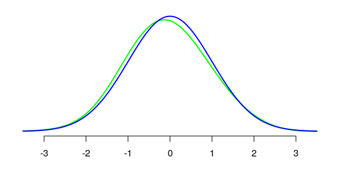
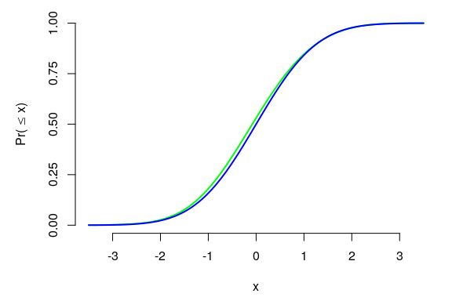
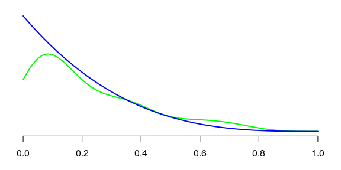
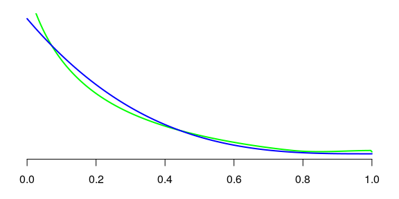

The 'kde1d' package
It seems to me that the kde1d package (One-Dimensional Kernel Density Estimation) is not very known. I’ve never heard of it on Stack Overflow, except in an answer of mine.
However this is a great package, IMHO. I’m going to show why I like it.
The d/p/q/r family
Estimating a density with the kde1d function returns a kde1d object, and this makes available the density, the distribution function, the quantile function associated to the density estimate, as well as a sampler from the estimated distribution.
Let’s fit a density with kde1d to a simulated Gaussian sample:
library(kde1d)
set.seed(666)
y <- rnorm(100)
fit <- kde1d(y)Here is the density estimate, in green, along with the true density, in blue:
opar <- par(mar = c(3, 1, 1, 1))
plot(NULL, xlim = c(-3.5, 3.5), ylim = c(0, 0.4), axes = FALSE, xlab = NA)
axis(1, at = seq(-3, 3, by=1))
curve(dkde1d(x, fit), n = 300, add = TRUE, col = "green", lwd = 2)
curve(dnorm(x), n = 300, add = TRUE, col = "blue", lwd = 2)
The density can even be evaluated outside the range of the data:
print(dkde1d(max(y)+1, fit))
## [1] 0.001684873The corresponding cumulative distribution function:
opar <- par(mar = c(4.5, 5, 1, 1))
plot(NULL, xlim = c(-3.5, 3.5), ylim = c(0, 1), axes = FALSE,
xlab = "x", ylab = expression("Pr("<="x)"))
axis(1, at = seq(-3, 3, by=1))
axis(2, at = seq(0, 1, by=0.25))
curve(pkde1d(x, fit), n = 300, add = TRUE, col = "green", lwd = 2)
curve(pnorm(x), n = 300, add = TRUE, col = "blue", lwd = 2)
The corresponding inverse cumulative distribution function is evaluated by qkde1d, and rkde1d simulates from the estimated distribution.
Bounded data
By default, the data supplied to the kde1d function is assumed to be unbounded. For bounded data, use the xmin and/or xmax options.
Estimating monotonic densities
Now, something I use to convince my folks that kde1d is great. Consider a distribution having a monotonic density. The base function density does not correctly estimate the density (at least, with the default settings):
set.seed(666)
y <- rbeta(100, 1, 4)
opar <- par(mar = c(3, 1, 1, 1))
plot(NULL, xlim = c(0, 1), ylim = c(0, 4), axes = FALSE, xlab = NA)
axis(1, at = seq(0, 1, by=0.2))
lines(density(y, from = 0, to = 1), col = "green", lwd = 2)
curve(dbeta(x, 1, 4), n = 300, add = TRUE, col = "blue", lwd = 2)
The monotonic aspect of the density does not occur in the estimated density. With kde1d, it does:
fit <- kde1d(y, xmin = 0, xmax = 1)
opar <- par(mar = c(3, 1, 1, 1))
plot(NULL, xlim = c(0, 1), ylim = c(0, 4), axes = FALSE, xlab = NA)
axis(1, at = seq(0, 1, by=0.2))
curve(dkde1d(x, fit), n = 300, add = TRUE, col = "green", lwd = 2)
curve(dbeta(x, 1, 4), n = 300, add = TRUE, col = "blue", lwd = 2)